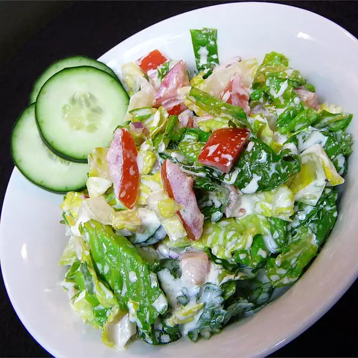

Russian Garden Salad

Ingredients
- 10 romaine lettuce leaves, chopped
- 4 tomatoes, chopped
- 1 large cucumber, sliced
- 1 onion, sliced
- ½ cup fresh parsley, chopped
- 1 tablespoon salt
- 2 tablespoons lemon juice
- 1 tablespoon extra-virgin olive oil
- 1 cup sour cream
Steps
- Toss the romaine lettuce, tomatoes, cucumber, onion, and parsley together in a large bowl; season with salt. Drizzle the lemon juice and olive oil over the salad; stir. Add the sour cream and mix until evenly coated.